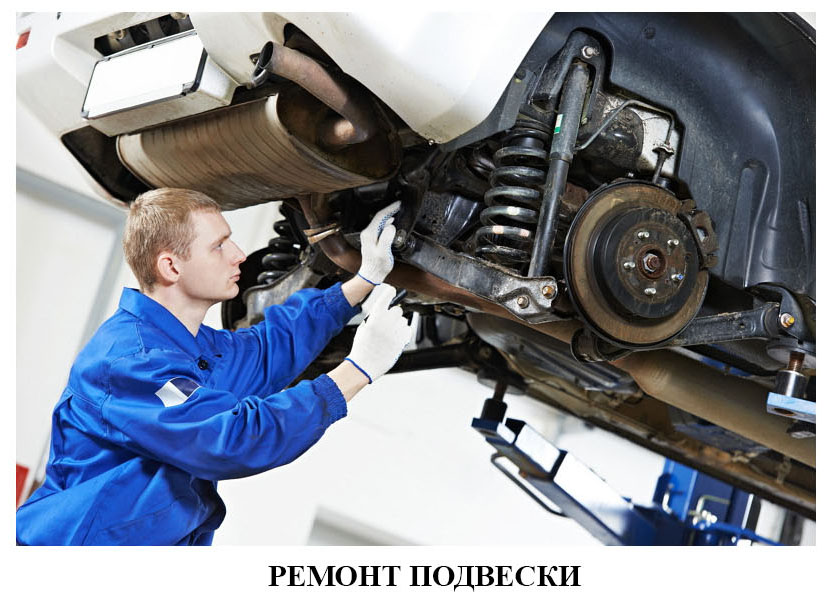

Какие детали автомобиля чаще всего изнашиваются?
Первое место среди причин обращения автомобилистов в автосервис занимает ремонт подвески автомобиля. Это связано с тем, что во время движения, подвеска автомобиля испытывает большие физические и механические нагрузки.
Наиболее востребованные услуги по ремонту подвески:
Замена ступицы (замена подшипника задней ступицы);
Замена амортизатора;
Замена пружин;
Замена или ремонт суппорта колес;
Замена или ремонт стойки амортизатора (замена опоры амортизационной стойки).

Когда надо ремонтировать подвеску? В каких случаях необходима замена подвески?
Прежде чем приступить к ремонту, необходимо провести диагностику подвески, выявить причину неисправности, что даст возможность провести качественный ремонт подвески и предотвратить более сложные поломки впоследствии.
Как узнать, что пора ремонтировать подвеску?
Вибрация на руле при езде по неровным дорогам;
Наклон транспортного средства вперед при торможении;
Раскачивание автомобиля во время движения;
Уклонение, увод автомобиля в сторону при прямолинейном движении;
Плохая управляемость;
Стуки и лишние шумы;
Быстрый и неравномерный износ покрышек шин.
.png)